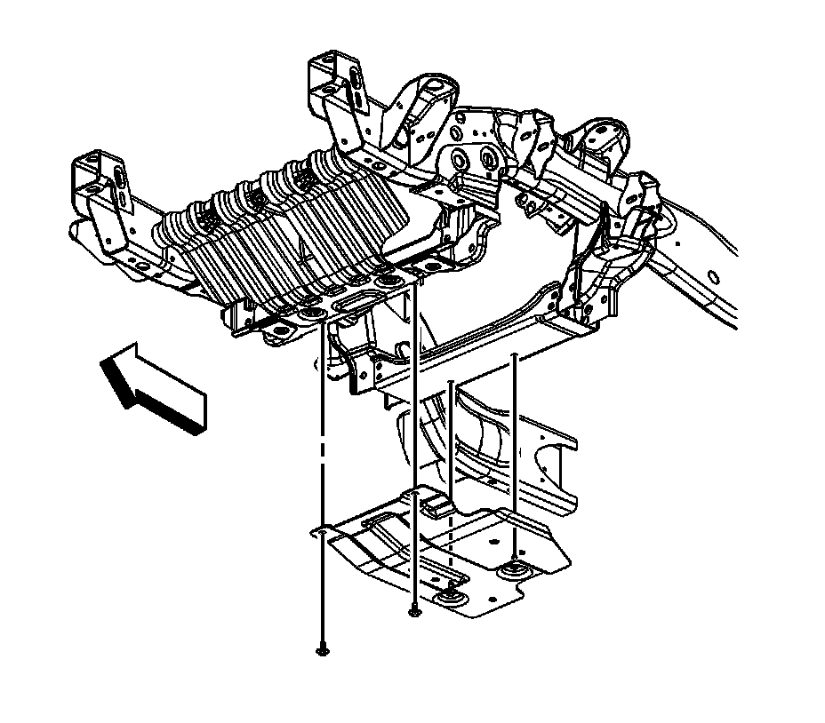

Starter Cable: Service and Repair
STARTER SOLENOID CABLE REPLACEMENT
REMOVAL PROCEDURE

1. Disconnect the negative battery cable.
2. Remove the air cleaner outlet duct.
3. Remove the mega fuse cover.

4. Remove the starter solenoid cable nut (1) from the mega fuse stud.
5. Remove the starter solenoid cable terminal (2) from the mega fuse stud.
6. Open the starter solenoid cable cover at the positive battery terminal.
7. Loosen the starter solenoid cable nut (5).
8. Remove the starter solenoid cable from the positive battery terminal.
9. Remove the starter solenoid cable clip (4) from the air conditioning (A/C) evaporator tube.

10. Raise and support the vehicle. Refer to Vehicle Lifting.
11. For 1500 series vehicles, remove the oil pan skid plate bolts and plate.

12. For 2500 series vehicles, remove the front 2 oil pan skid plate bolts, loosen the rear 2 bolts and remove the skid plate.

13. Remove the starter solenoid cable clip (1) from the wheelhouse panel.
14. Remove the starter solenoid cable clip bolt (2) from the frame.

15. Remove the starter solenoid cable nut (1) from the starter.
16. Remove the starter solenoid cable (2) from the starter.
17. Lower the vehicle.
18. Remove the starter solenoid cable from the vehicle.
INSTALLATION PROCEDURE
1. Install the starter solenoid cable to the vehicle.
2. Install the starter solenoid cable to the positive battery terminal.
3. NOTE: Refer to Fastener Notice in Service Precautions.
Tighten the starter solenoid cable nut (5).
Tighten the nut to 17 N.m (13 lb ft).
4. Close the starter solenoid cable cover at the positive battery terminal.
5. Install the starter solenoid cable terminal (2) to the mega fuse stud.
6. Install the starter solenoid cable nut (1) to the mega fuse stud.
Tighten the nut to 9 N.m (80 lb in).
7. Install the starter solenoid cable clip (4) to the A/C evaporator tube.
8. Install the mega fuse cover.
9. Raise the vehicle.
10. Install the starter solenoid cable (2) to the starter.
11. Install the starter solenoid cable nut (1) to the starter.
Tighten the nut to 9 N.m (80 lb in).
12. Position the starter solenoid cable clip to the frame and install the starter solenoid cable clip bolt (2).
13. Install the starter solenoid cable clip (1) to the wheelhouse panel.
14. For 2500 series vehicles, install the oil pan skid plate and tighten the rear 2 bolts and install and tighten the front 2 bolts.
Tighten the bolts to 28 N.m (21 lb ft).
15. For 1500 series vehicles, install the oil pan skid plate and bolts.
Tighten the bolts to 28 N.m (21 lb ft).
16. Lower the vehicle.
17. Install the air cleaner outlet duct.
18. Connect the negative battery cable.